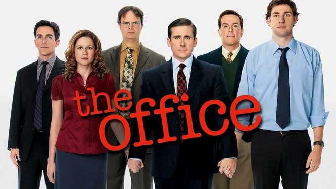
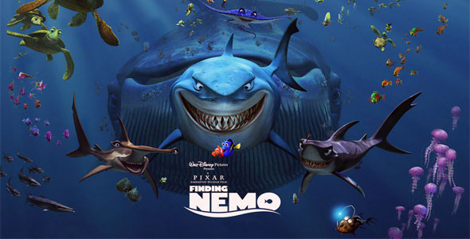
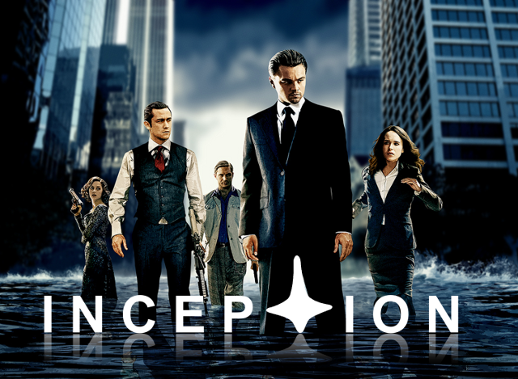
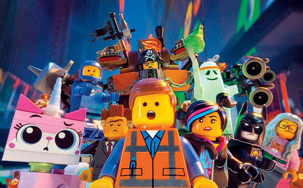

TV Shows
Archer
Animated series set in the world of international espionage following the activities of a super-spy.
Bob's Burgers
Bob Belcher is a third-generation restaurateur who runs Bob's Burgers with his loving wife and their three children. Bob believes his burgers speak for themselves and isn't afraid to offer a variety of off-beat creations. Bob's wife, Linda, supports his dream but is becoming sick of the slow times, as the restaurant is constantly in danger of going out of business. Despite the challenges, which includes consistent harassment from Linda's ex -- a health inspector -- Bob tries to keep the grill sizzling.

Suits
In need of an associate, big-time Manhattan corporate lawyer Harvey Specter hires the only guy who impresses him -- college dropout Mike Ross. The fact that Ross isn't actually a lawyer isn't lost on Specter, who believes his new right-hand man is a legal prodigy with the book smarts of a Harvard law grad and the street smarts of a hustler. However, in order to keep their jobs, the charade must remain strictly between these two unconventional thinkers. Eventually, the secret Ross is hiding gets out, leading to his arrest and trouble for the firm.
Silicon Valley
Partially inspired by co-creator Mike Judge's experiences as a Silicon Valley engineer in the 1980s, this comedy series follows the misadventures of introverted computer programmer Richard and his brainy friends as they attempt to strike it rich in a high-tech gold rush. They live together in a Bay Area startup incubator loosely run by self-satisfied dot-com millionaire Erlich, who lets them stay in his house rent-free in exchange for a stake in the projects they invent there. But when Richard develops a powerful search algorithm at his day job, he finds himself caught in the middle of a bidding war between his boss -- whose firm offers Richard an eight-figure buyout -- and a deep-pocketed venture capitalist.

The Flash
At 11, Barry Allen's life changed completely when his mother died in a freak accident and his innocent father was convicted of her murder. Now a crime-scene investigator, his dedication to learn the truth about his mother's death drives him to follow up on every new scientific advancement and urban legend. When his latest obsession -- a particle accelerator heralded as a world-changing invention -- causes an explosion, it creates a freak storm and Barry is struck by lightning. He awakes from a coma nine months later with the power of superspeed. When he learns that others who have gained powers use them for evil, he dedicates himself to protecting the innocent, while still trying to solve the older mystery.

Dragon Ball Z
"Dragon Ball Z" follows the adventures of Goku who, along with the Z Warriors, defends the Earth against evil. The action adventures are entertaining and reinforce the concept of good versus evil. "Dragon Ball Z" teaches valuable character virtues such as teamwork, loyalty, and trustworthiness.
The Office
This U.S. adaptation -- set at a paper company in Scranton, Pa. -- has a similar documentary style to that of the Ricky Gervais-led British original. It features the Dunder-Mifflin staff, which includes characters based on roles in the British show -- and, quite possibly, people with whom you work in your office. There's Jim, the likable employee who's a bit of an every man. Jim has a thing for receptionist-turned-sales-rep Pam -- because office romances are always a good idea! There's also Dwight, the co-worker who is successful but devoid of social skills and common sense.
Movies
Finding Nemo
Finding Nemo is a 2003 American computer-animated comedy-drama adventure film produced by Pixar Animation Studios and released by Walt Disney Pictures. Written and directed by Andrew Stanton. the film stars the voices of Albert Brooks, Ellen DeGeneres, Alexander Gould, and Willem Dafoe. It tells the story of the overprotective clownfish named Marlin who, along with a regal tang named Dory, searches for his abducted son Nemo all the way to Sydney Harbour. Along the way, Marlin learns to take risks and comes to terms with Nemo taking care of himself.
Inception
Dom Cobb (Leonardo DiCaprio) is a thief with the rare ability to enter people's dreams and steal their secrets from their subconscious. His skill has made him a hot commodity in the world of corporate espionage but has also cost him everything he loves. Cobb gets a chance at redemption when he is offered a seemingly impossible task: Plant an idea in someone's mind. If he succeeds, it will be the perfect crime, but a dangerous enemy anticipates Cobb's every move.
The Lego Movie
Emmet (Chris Pratt), an ordinary LEGO figurine who always follows the rules, is mistakenly identified as the Special -- an extraordinary being and the key to saving the world. He finds himself drafted into a fellowship of strangers who are on a mission to stop an evil tyrant's (Will Ferrell) plans to conquer the world. Unfortunately for Emmet, he is hopelessly -- and hilariously -- unprepared for such a task, but he'll give it his all nonetheless.
Dead Pool
Wade Wilson (Ryan Reynolds) is a former Special Forces operative who now works as a mercenary. His world comes crashing down when evil scientist Ajax (Ed Skrein) tortures, disfigures and transforms him into Deadpool. The rogue experiment leaves Deadpool with accelerated healing powers and a twisted sense of humor. With help from mutant allies Colossus and Negasonic Teenage Warhead (Brianna Hildebrand), Deadpool uses his new skills to hunt down the man who nearly destroyed his life.

Tropic Thunder
Tugg Speedman (Ben Stiller), pampered action superstar, sets out for Southeast Asia to take part in the biggest, most-expensive war movie produced, but soon after filming begins, he and his co-stars, Oscar-winner Kirk Lazarus (Robert Downey Jr.), comic Jeff Portnoy (Jack Black) and the rest of the crew, must become real soldiers when fighting breaks out in that part of the jungle.

Youtube Channels
SourceFed
SourceFed is a news website and YouTube channel created by Philip DeFranco in January 2012 as part of YouTube's $100 million original channel initiative and was originally produced by James Haffner. SourceFed now mainly focuses on pop culture, news, and technology. As of March 14, 2016, the SourceFed channel has accumulated over 1.7 million subscribers and 843 million video views.

CollegeHumor
CollegeHumor is a comedy website based in Los Angeles and owned by IAC/InterActiveCorp. The site features daily original comedy videos and articles created by its in-house writing and production team, in addition to user-submitted videos, pictures, articles and links. It was created by Josh Abramson and Ricky Van Veen. In early 2009, CollegeHumor's editorial staff wrote and starred in their own TV show, The CollegeHumor Show, on MTV. CollegeHumor is operated by CHMedia, a New York company that also owns Defunker, Sports Pickle, and Jest (formerly Today's Big Thing, also owned by IAC).
Comicstorian
Learn about your favorite comics!